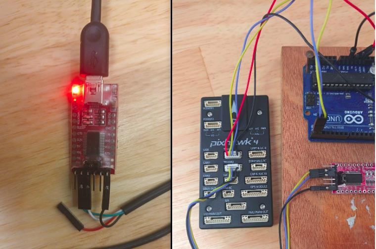

# # | default_exp mavlink.cam_baseMavlink Documentation and debugging
Mavlink Documentaion and debugging with wireshark and QGC
import mavcom.logging
#| hideMavlink Routing https://ardupilot.org/dev/docs/mavlink-routing-in-ardupilot.html Each message contains a System ID and Component ID field to specify where the message came from. In addition some messages (including SET_POSITION_TARGET_GLOBAL_INT) include target_system and target_component fields to allow specifying which system/component should execute the command.
https://mavlink.io/en/guide/routing.html A MAVLINK network is made up of systems (vehicles, ground stations, antenna trackers, etc.), which may be composed from one or more components (autopilot, camera, servos, etc.).
Each system has a network-unique system id, and each component has a system-unique component id that can be used for addressing/routing:
The system id has a value between 1 and 255. The default autopilot system id is usually 1. Users should allocate unique increasing id values when adding new autopilots to a network. GCS systems and developer APIs typically use an ID at the top of the numeric range to reduce ID clashes (e.g. 255). Often their system ID is configurable to allow multi-GCS systems. The component id is allocated by type and number from MAV_COMPONENT. Messages can be intended for all systems, specific systems, all components in a system, or specific components within a system. The protocol defines two 8-bit fields that can (optionally) be specified in the message payload to indicate where the message should be sent/routed. If the ids are omitted or set to zero then the message is considered a broadcast (intended for all systems/components).
target_system: System that should execute the command target_component: Component that should execute the command (requires target_system). MAVLink components are expected to process messages that have a matching system/component id and broadcast messages. They are expected to route/resend messages that are intended for other (or all) recipients to other active channels (i.e. MAVLink systems may be connected across different transports, connected by a MAVLink system that routes the messages). Broadcast messages are forwarded to all channels that haven’t seen the message. Addressed messages are resent on a new channel iff the system has previously seen a message from the target on that channel (messages are not resent if the addressee is not known or is on the original/incoming channel).
Mavlink Camera Control via mavproxy serial port and UDP
*** First Run Mavproxy***
mavproxy.py --master udpin:localhost:14445 --out udpout:localhost:14550
mavproxy.py --master=/dev/ttyACM1 --baudrate 57600 --out udpout:localhost:14445Mavlink Camera Control via mavproxy serial port and UDP
The camera control messages are sent to the camera server via mavproxy. The camera server is running on the companion computer and the manager on the GCS PC. We connect via UDP and wait for the camera heartbeat. Then start and stop the cam_1 (component 22) streaming
import time
from fastcore.test import *
from mavcom.mavlink import CameraClient, CameraServer, MAVCom, mavlink
from mavcom.cameras.gst_cam import GSTCamera
from mavcom.utils import helpers
from mavcom.utils.general import boot_time_str, toml_load, config_dir
async def main():
with MAVCom("udpin:localhost:14445", source_system=111, ) as gcs_mavlink: # ground control station mavlink
with MAVCom("udpout:localhost:14445", source_system=222, ) as drone_mavlink: # drone mavlink
# connect to the cameras manager
gcs_cam: CameraClient = gcs_mavlink.add_component(CameraClient(mav_type=mavlink.MAV_TYPE_GCS, source_component=11))
# add UAV cameras
cam_1 = GSTCamera(camera_dict=toml_load(config_dir() / "test_cam_0.toml"), loglevel=10)
cam_2 = GSTCamera(camera_dict=toml_load(config_dir() / "test_cam_1.toml"))
# connect cameras to mavlink
drone_mavlink.add_component(CameraServer(mav_type=mavlink.MAV_TYPE_CAMERA, source_component=22, camera=cam_1,))
drone_mavlink.add_component(CameraServer(mav_type=mavlink.MAV_TYPE_CAMERA, source_component=23, camera=cam_2))
# wait for heartbeat signal from the drone
ret = await gcs_cam.wait_heartbeat(target_system=222, target_component=22, timeout=1)
print(f"Heartbeat {ret = }")
time.sleep(0.1)
await gcs_cam.video_start_streaming(222, 22, )
time.sleep(2)
await gcs_cam.video_stop_streaming(222, 22, )
await main()
# client.master.wait_heartbeat()
# client.trigger_camera(2)
# client.trigger_camera(2)
#
#
# print(f"client.num_commands_sent: {client.num_commands_sent}")
# print(f"server.num_commands_received: {server.num_commands_received}")
# print(f"client.num_acks_received: {client.num_acks_received}")
#
# print(f"server msgs: {server.message_cnts}")
# print(f"client msgs: {client.message_cnts}")
#
# test_eq(client.num_commands_sent, server.num_commands_received)
# test_eq(client.num_acks_received, server.num_commands_received)INFO |30.150| mavcom.MAVCom | mavcom.py :378 | Thread-77 | MainProces | MAVLink Mav2: True, source_system: 111
INFO |30.251| mavcom.MAVCom | mavcom.py :378 | Thread-78 | MainProces | MAVLink Mav2: True, source_system: 222
INFO |30.253| mavcom.CameraClien | component.:117 | MainThread | MainProces | Component Started self.source_component = 11, self.mav_type = 6, self.source_system = 111
INFO |30.257| mavcom.GSTCamera | gst_cam.py:351 | MainThread | MainProces | GSTCamera Started
INFO |30.269| pygst.GstPipeli | gst_tools.:225 | MainThread | MainProces | Starting GstPipeline: videotestsrc pattern=ball is-live=true ! timeoverlay ! textoverlay text="Front" valignment=top halignment=right font-desc="Sans, 18" shaded-background=true ! capsfilter caps=video/x-raw,format=RGB,width=800,height=600,framerate=30/1 ! tee name=t t. ! queue ! videoscale ! capsfilter caps=video/x-raw,format=RGB,width=400,height=300 ! videoconvert ! autovideosink t. ! queue leaky=2 ! intervideosink channel=channel_0 sync=false t. ! queue leaky=2 ! intervideosink channel=channel_1 sync=false t. ! interpipesink name=cam_0
DEBUG|30.269| pygst.GstPipeli | gst_tools.:229 | MainThread | MainProces | GstPipeline Setting pipeline state to PLAYING ...
DEBUG|30.270| pygst.GstPipeli | gst_tools.:231 | MainThread | MainProces | GstPipeline Pipeline state set to PLAYING
INFO |30.272| pygst.GstStream | gst_tools.:225 | MainThread | MainProces | Starting GstStreamUDP: interpipesrc listen-to=cam_0 is-live=true allow-renegotiation=true format=time ! valve name=myvalve drop=False ! queue ! videoconvert ! x264enc tune=zerolatency noise-reduction=10000 bitrate=2048 speed-preset=superfast ! rtph264pay ! udpsink host=127.0.0.1 port=5000 sync=true
DEBUG|30.273| pygst.GstStream | gst_tools.:229 | MainThread | MainProces | GstStreamUDP Setting pipeline state to PLAYING ...
DEBUG|30.273| pygst.GstStream | gst_tools.:231 | MainThread | MainProces | GstStreamUDP Pipeline state set to PLAYING
INFO |30.274| mavcom.GSTCamera | gst_cam.py:654 | MainThread | MainProces | Video streaming pipeline "gstreamer_udpsink" created on port 5000
DEBUG|30.374| pygst.GstStream | gst_tools.:265 | MainThread | MainProces | Valve "myvalve" state set to True
INFO |30.375| mavcom.GSTCamera | gst_cam.py:668 | MainThread | MainProces | Video streaming "gstreamer_udpsink" stopped (paused) on port 5000
INFO |30.378| mavcom.GSTCamera | gst_cam.py:351 | MainThread | MainProces | GSTCamera Started
INFO |30.390| pygst.GstPipeli | gst_tools.:225 | MainThread | MainProces | Starting GstPipeline: videotestsrc pattern=ball is-live=true ! timeoverlay ! textoverlay text="Left" valignment=top halignment=right font-desc="Sans, 18" shaded-background=true ! capsfilter caps=video/x-raw,format=RGB,width=800,height=600,framerate=30/1 ! tee name=t t. ! queue ! videoscale ! capsfilter caps=video/x-raw,format=RGB,width=400,height=300 ! videoconvert ! autovideosink t. ! queue leaky=2 ! intervideosink channel=channel_0 sync=false t. ! queue leaky=2 ! intervideosink channel=channel_1 sync=false t. ! interpipesink name=cam_1
INFO |30.393| pygst.GstStream | gst_tools.:225 | MainThread | MainProces | Starting GstStreamUDP: interpipesrc listen-to=cam_1 is-live=true allow-renegotiation=true format=time ! valve name=myvalve drop=False ! queue ! videoconvert ! x264enc tune=zerolatency noise-reduction=10000 bitrate=2048 speed-preset=superfast ! rtph264pay ! udpsink host=127.0.0.1 port=5001 sync=true
INFO |30.394| mavcom.GSTCamera | gst_cam.py:654 | MainThread | MainProces | Video streaming pipeline "gstreamer_udpsink" created on port 5001
INFO |30.495| mavcom.GSTCamera | gst_cam.py:668 | MainThread | MainProces | Video streaming "gstreamer_udpsink" stopped (paused) on port 5001
INFO |30.496| mavcom.CameraServe | component.:117 | MainThread | MainProces | Component Started self.source_component = 22, self.mav_type = 30, self.source_system = 222
INFO |30.498| mavcom.CameraServe | component.:117 | MainThread | MainProces | Component Started self.source_component = 23, self.mav_type = 30, self.source_system = 222
INFO |30.600| mavcom.GSTCamera | gst_cam.py:662 | Thread-84 | MainProces | Video streaming "gstreamer_udpsink" resumed on port 5000
INFO |30.601| mavcom.CameraServe | camera_ser:338 | Thread-84 | MainProces | Started video streaming: streamId = 0.0
INFO |32.703| mavcom.GSTCamera | gst_cam.py:668 | Thread-84 | MainProces | Video streaming "gstreamer_udpsink" stopped (paused) on port 5000
INFO |33.407| pygst.GstPipeli | gst_tools.:335 | MainThread | MainProces | GstPipeline Shutdown
INFO |33.409| mavcom.GSTCamera | gst_cam.py:513 | MainThread | MainProces | GSTCamera closed
INFO |33.580| pygst.GstStream | gst_tools.:335 | MainThread | MainProces | GstStreamUDP Shutdown
INFO |33.582| mavcom.GSTCamera | gst_cam.py:707 | MainThread | MainProces | !!!!!! Closed "gstreamer_udpsink"
INFO |33.583| mavcom.CameraServe | component.:388 | MainThread | MainProces | CameraServer closed (not waiting for _t_heartbeat daemon thread)
INFO |33.690| pygst.GstPipeli | gst_tools.:335 | MainThread | MainProces | GstPipeline Shutdown
INFO |33.691| mavcom.GSTCamera | gst_cam.py:513 | MainThread | MainProces | GSTCamera closed
INFO |33.801| pygst.GstStream | gst_tools.:335 | MainThread | MainProces | GstStreamUDP Shutdown
INFO |33.803| mavcom.GSTCamera | gst_cam.py:707 | MainThread | MainProces | !!!!!! Closed "gstreamer_udpsink"
INFO |33.804| mavcom.CameraServe | component.:388 | MainThread | MainProces | CameraServer closed (not waiting for _t_heartbeat daemon thread)
INFO |33.805| mavcom.MAVCom | mavcom.py :427 | MainThread | MainProces | MAVCom closed
INFO |34.503| mavcom.CameraClien | component.:388 | MainThread | MainProces | CameraClient closed (not waiting for _t_heartbeat daemon thread)
INFO |34.505| mavcom.MAVCom | mavcom.py :427 | MainThread | MainProces | MAVCom closedJohn Doe
John Doe
Heartbeat ret = (222, 22)Debugging with wireshark
see Parsing MAVLink in Wireshark Instasll wireshark
see How to install and use wireshark- on ubuntu
sudo apt-get install wireshark
sudo apt update
sudo apt install wireshark
wiresharkIf you face any error during installation or running Wireshark like Wireshark xdg_runtime_dir not set then open the terminal and run this command and click YES to the message box
sudo dpkg-reconfigure wireshark-commonThe above can be debugged with wireshark using the filter
mavlink_proto.sysid!=255 && not icmp
mavlink_proto.sysid!=255 && mavlink_proto.sysid!=1 && not icmp
Wireshark on Ubuntu see Parsing MAVLink in Wireshark
Wireshark has implemented Privilege Separation which means that the Wireshark GUI (or the tshark CLI) can run as a normal user while the dumpcap capture utility runs as root. This can be achieved by installing dumpcap setuid root. The advantage of this solution is that while dumpcap is run as root the vast majority of Wireshark’s code is run as a normal user (where it can do much less damage). https://wikileaks.org/ciav7p1/cms/page_16384719.html - Install Wireshark sudo apt-get install wireshark - Create a wireshark group sudo groupadd wireshark - Add your username to the wireshark group sudo usermod -a -G wireshark YOUR_USERNAME - Change the group ownership of the file dumpcap to wireshark sudo chgrp wireshark /usr/bin/dumpcap - Chage the mode of the file dumpcap to allow execution by the group wireshark sudo chmod 750 /usr/bin/dumpcap - Grant capabilities with setcap sudo setcap cap_net_raw,cap_net_admin=eip /usr/bin/dumpcap - Verify the change sudo getcap /usr/bin/dumpcap - Reboot - sudo reboot now
Also see * https://wiki.wireshark.org/CaptureSetup/CapturePrivileges
Note The last few lines of the plugin file specify the ports to be monitored. > -- bind protocol dissector to port 14550 and 14580 >>local udp_dissector_table = DissectorTable.get("udp.port") udp_dissector_table:add(14415, mavlink_proto) udp_dissector_table:add(14425, mavlink_proto) udp_dissector_table:add(14435, mavlink_proto) udp_dissector_table:add(14445, mavlink_proto) udp_dissector_table:add(14550, mavlink_proto) udp_dissector_table:add(14580, mavlink_proto) udp_dissector_table:add(18570, mavlink_proto)
QGC can also be used to debug the communication
Enable mavlink fowarding in QGC to localhost:14445
Serial Port Connection
Connection using a serial crossover cable or via pixhawk telemetry ports 
Telemetry 2 port on pixhawk is connected to the USB port on the companion computer using a serial crossover cable. 1. (red) VCC +5V 2. (?) TX (OUT) +3.3V 3. (?) RX (IN) +3.3V 4. (?) CTS +3.3V 5. (?) RTS +3.3V 6. (?) GND GND`
Finding the correct serial ports
Check that if you are a member of that group: “dialout” group.
groups ${USER}If not, add yourself to it and reboot or logout and login again.
sudo usermod -a -G dialout $USER
sudo reboot nowCutecom is a GUI serial terminal program that can be used to test the serial ports.
sudo apt-get install cutecom lrzszRun Cutecom and select the correct serial port and baud rate. Note that the status bar showing Ardupilot Pihawk4, also check that it might be using 57600 baud rate.
cutecomRunning PX4 SITL
see PX4 SITL Gazebo Simulation
in the PX4 directory run make px4_sitl gz_x500
*** Run Mavproxy*** mavproxy.py --master udpin:localhost:14445 --out udpout:localhost:14550 mavproxy.py --master=/dev/ttyACM1 --baudrate 57600 --out udpout:localhost:14445
https://github.com/mavlink/MAVSDK/issues/1803
So I managed to change OpenHD in this regard. No idea why I had such a hard time wrapping my head around, but now it works the following: OpenHD binds port 127.0.0.1:14551 and listens on 127.0.0.1:14550 AND instead of using sendto() with a unbound port (which then in turn means the sender port can be anything) messages are sent with sendto() from the bound port (the same that is used for listening).
So messages from OpenHD to mavsdk go the following: OpenHD (out) via 127:0:0:1:14551 sent to 127:0:0:0:1:14550
So when mavsdk receives the first message, the sender address::port is 127:0:0:1:14551 and mavsdk can send the messages back to 127:0:0:1:14551.
https://julianoes.com/ The ports are not symmetrical! QGC listens on local port 14550 and sends UDP packets back to wherever messages came from.